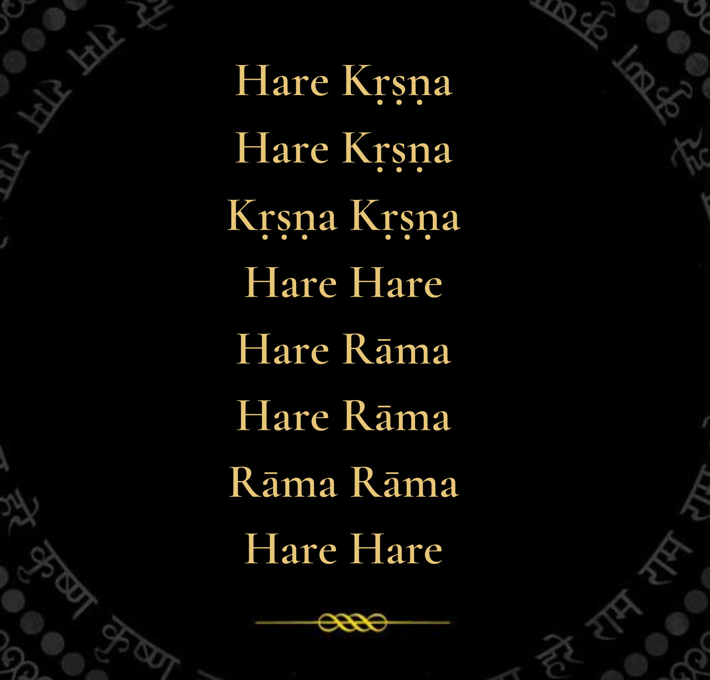

Currently being practiced and Taught at Harvard, Yale, Purdue, Carnegie Mellon, Brigham Young, CalTech, Georgia Tech and many other Universities. It's also used extensively in Silicon Valley in places like Google, Apple, And Microsoft. It's been used by Steve Jobs, Einstein, Henry David Thoreau, The Grateful Dead, The Beatles, Allen Ginsberg as well as Will Smith, Jay Shetty, etc. It's been practiced for millions of years by yogis through the ages.
This mantra is so powerful and invaluable that there is no price that can be put on it. So it has been made free to the public.

Chant AND BE HAPPY!!
 Hear How To Chant
Hear How To Chant
The simple process of Chanting
If you would like chanting beads or counters and further instruction on how to chant, please click the button below to reveal contact details of Vishvambarvyasa das
Translate this page in
your preferred language:
You can translate the content of this
page by selecting a language in the
select box.
is the sublime method of awakening our Krsna Consciousness.(Inner Happiness)
The transcendental vibration established by the chanting of Hare Kṛṣṇa, Hare Kṛṣṇa, Kṛṣṇa Kṛṣṇa, Hare Hare/ Hare Rāma, Hare Rāma, Rāma Rāma, Hare Hare is the sublime method for reviving our transcendental consciousness. As living spiritual souls, we are all originally Kṛṣṇa conscious entities, but due to our association with matter from time immemorial, our consciousness is now adulterated by the material atmosphere. The material atmosphere, in which we are now living, is called māyā, or illusion. Māyā means “that which is not.” And what is this illusion? The illusion is that we are all trying to be lords of material nature, while actually we are under the grip of her stringent laws. When a servant artificially tries to imitate the all-powerful master, he is said to be in illusion. We are trying to exploit the resources of material nature, but actually we are becoming more and more entangled in her complexities. Therefore, although we are engaged in a hard struggle to conquer nature, we are ever more dependent on her. This illusory struggle against material nature can be stopped at once by revival of our eternal Kṛṣṇa consciousness. Hare Kṛṣṇa, Hare Kṛṣṇa, Kṛṣṇa Kṛṣṇa, Hare Hare is the transcendental process for reviving this original, pure consciousness. By chanting this transcendental vibration, we can cleanse away all misgivings within our hearts.
It's very simple to begin practice. Try to chant the mantra as many times as you can. It can be done sitting and focusing on the words or it can literally be chanted anywhere at anytime. Ideally it is good to be consistent and make it a daily practice. This can be done by chanting the mantra in full 108 times. This equals one round. The idea is to try to get as many rounds done in a day as possible .One round should take you around 5-10 minutes but don't worry sometimes the first few rounds may take longer! Don't rush it, instead relish it!
What does each word in the mantra mean? Each word is addressing the different energies of God. Hare is addressing the internal energy. Krsna is addressing the attractive energy and Rama is the all positive pervasive energy of God. So by chanting these mantras (mantras means to become master of the mind), one is associating directly with God.
One question we get asked regularly is whether they can practice if they are Christian, Hindu or Muslim, etc. The answer is a resounding YES. Because Chanting Hare Krishna belongs to no religion. It is actually a compilation of the basic teachings of all bonafide religions and that is to LOVE GOD and to LOVE ONE ANOTHER. Because in all reality there is only one religion, which is LOVE and only ONE GOD with many different names, known by many different people at different periods of time in different places. Hence this is a scientific process of uncovering LOVE OF GOD which is already within each and every person. It is not an artificial means.
Chanting Hare Krsna has also been proven very effective for the brain and stress.
Many studies have been done but two very notable ones are presented here.
This Mantra was designed with the Modern Man/Woman in Mind. . .
Mukunda: The maha-mantra was prescribed for modern times because of the fast-paced nature of things today. Even when people do get into a little quiet place, it’s very difficult to calm the mind for very long.
George Harrison: That’s right. Chanting Hare Krishna is a type of meditation that can be practiced even if the mind is in turbulence. You can even be doing it and other things at the same time. That’s what’s so nice. In my life there’s been many times the mantra brought things around. It keeps me in tune with reality, and the more you sit in one place and chant. . . the more you purify the vibration, the more you can achieve what you’re trying to do
Some Quotes From Prominent Practicioners
George Harrison was one of the most outspoken and open about his practicing of Chanting Hare Krsna so below are a few quotes from him.

Once I chanted the Hare Krishna mantra all the way from France to Portugal, nonstop. I drove for about twenty-three hours and chanted all the way. It gets you feeling a bit invincible. The funny thing was that I didn't even know where I was going. I mean I had bought a map, and I knew basically which way I was aiming, but I couldn't speak French, Spanish, or Portuguese. But none of that seemed to matter. You know, once you get chanting, then things start to happen transcendentally. -George Harrison
Chanting Hare Krishna is really the same sort of thing as meditation, but I think it has a quicker effect. I mean, even if you put your beads down, you can still say the mantra or sing it without actually keeping track on your beads. -George Harrison
No matter how much money you've got, it doesn't necessarily make you happy. You have to find your happiness with the problems you have, not worry too much about them, and chant Hare Krishna, Hare Krishna, Krishna Krishna, Hare Hare. - George Harrison
- - - - -

Everything started happening for me when I started Chanting Hare Krsna! -Jean Claude (Youngest Ever Director of 3M Inc. in France)

By Starting to Chant Hare Krishna, I feel tremendous Happiness" - Vicki Overton (European Lead Model)
I've been chanting Hare Krishna for many years, and I can't find anything more pleasurable - N.D Desai (Indian Industrialist)

Chanting Hare Krsna has made a tremendous Impact on my life . - Alfred Ford (Grandson to Henry Ford of Ford Motor Company)
>

“This chanting of the Hare Krishna mantra is enacted from the spiritual platform and thus this sound vibration surpasses all lower strata of consciouness – namely sensual, mental and intellectual.”
A.C. Bhaktivedanta Swami Srila Prabhupada